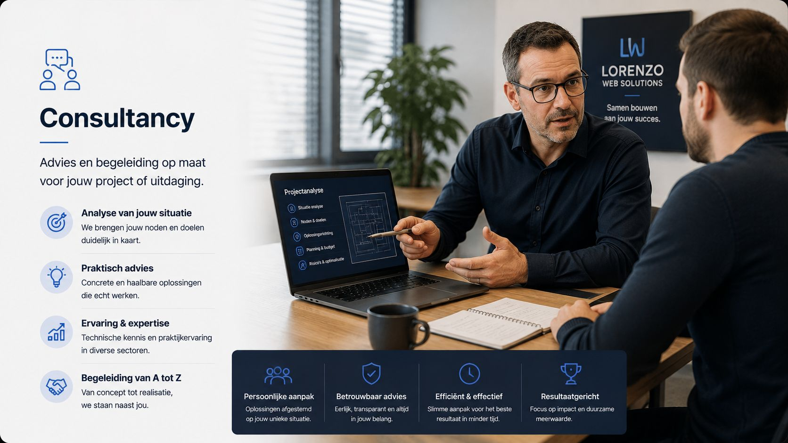
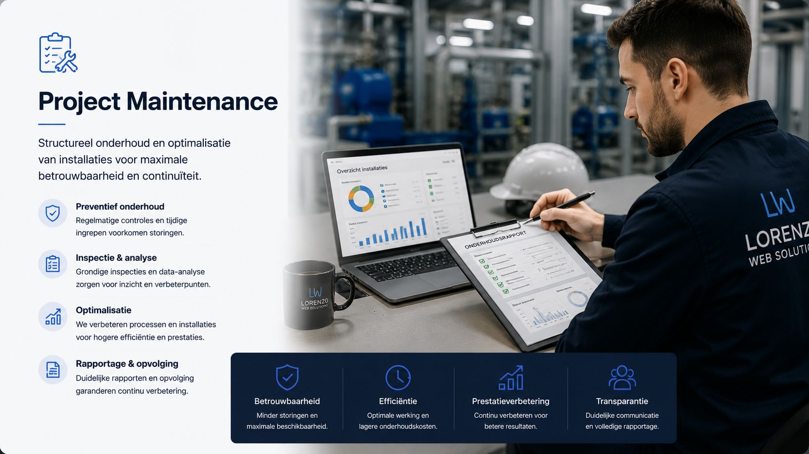
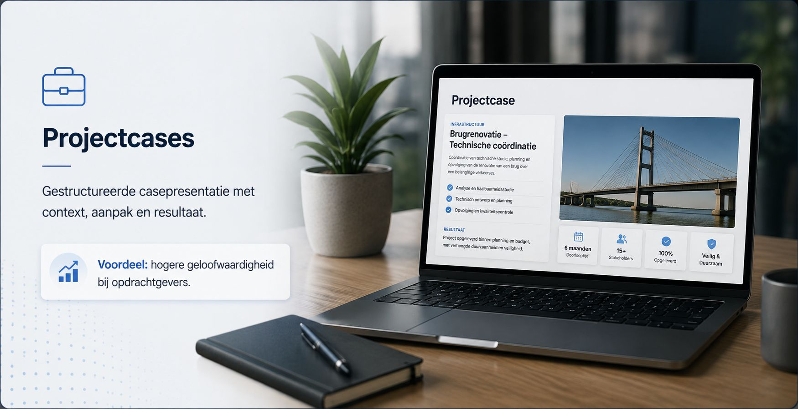

PX
Portfolio op maat
Gerichte profilering van expertise, projecten en professionele meerwaarde.
Voordeel: bezoekers begrijpen snel jouw profiel en aanbod.
Personal Portfolio Demo
Deze demo combineert projectcases, expertiseblokken, certificatenstructuur en een snelle contactflow in een verkoopbare branchestijl.

Diensten en expertise
Gerichte profilering van expertise, projecten en professionele meerwaarde.
Voordeel: bezoekers begrijpen snel jouw profiel en aanbod.
Gestructureerde casepresentatie met context, aanpak en resultaat.
Voordeel: hogere geloofwaardigheid bij opdrachtgevers.
Duidelijke componenten om opleidingen, attesten en competenties te tonen.
Voordeel: professionele onderbouwing zonder overvolle pagina.
Korte route naar contact, intake en nieuwe opdrachten.
Voordeel: betere conversie op smartphone en tablet.
Projecten

Projectformat 01
Case-opbouw met opdrachtcontext, analyse, uitvoering en aantoonbare impact.

Projectformat 02
Praktijkgerichte weergave van interventies, planning en resultaat per opdracht.

Projectformat 03
Portfoliosectie voor verbetertrajecten met duidelijke technische samenvatting.
Certificaten en opleidingen
Deze sectie toont geen fictieve certificaten, maar is klaar om echte attesten en opleidingen professioneel te presenteren.
Werkwijze
Doelen, profiel en type opdrachten worden in kaart gebracht.
Pagina-opbouw en contentblokken worden afgestemd op doelgroep en conversie.
Casecomponenten, bewijssecties en contactflow worden uitgewerkt.
Responsive controle en finale kwaliteitscheck voor oplevering.
Contactflow
De componenten zijn gebouwd voor technische profielen, freelancers, consultants en professionals die een geloofwaardige online presentatie nodig hebben.